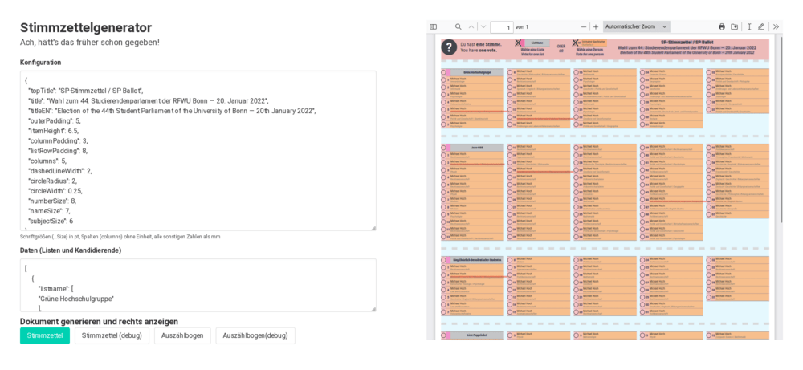

Wahlsoftware
Für die Wahlen zum Studierendenparlament der Universität Bonn wurde einiges an hilfreicher Open-Source-Software entwickelt.
Diese Softwareprojekte werden in der SP-Wahl-GitHub-Organisation verwaltet.
VoteManager ·
VoteManagerManager ·
wahlstand ·
Stimmzettelgenerator
VoteManager
GitHub-Repository ·
Releases
Der VoteManager ist eine Auszählsoftware für eine personalisierte Verhältniswahl.
Es lassen sich Wahlurnen und Listen mit Kandidierenden anlegen.
Bei der Auszählung werden die Personen- und Listenstimmen erfasst.
Am Ende lassen sich Urnenergebnisse sowie das Gesamtergebnis exportieren.
Der VoteManager liest und exportiert seine Konfigurations- und Ergebnisdaten in einem xml-Format.
Zur Ausführung benötigt der VoteManager Java.
VoteManagerManager
GitHub-Repository
Mit dem VoteManagerManager lassen sich die Ergebnisse mehrerer VoteManager-Instanzen innerhalb eines Netzwerks zusammenführen und vergleichen.
Von jeder laufenden VoteManager-Instanz lässt sich auf Port 4567 der aktuelle Zustand abfragen.
Die Auszählrechner werden in zwei Gruppen aufgeteilt (yellow, pink), die jeweils das Ergebnis jeder Urne einmal eintragen (aber nur einmal pro Gruppe!).
Der VoteManagerManager fragt die Rechner beider Gruppen ab, fasst die Einzelergebnisse beider Gruppen zu Gruppenergebnissen zusammen, und vergleicht dann die beiden Gruppenergebnisse.
Abweichungen werden gemeldet und können dann untersucht werden.
Der VoteManagerManager ist eine simple Webseite aus HTML+JavaScript, die man auf einem Laptop lokal aufrufen und benutzen kann.

wahlstand
GitHub-Repository
Der wahlstand dient zur Bekanntgabe vorläufiger Auszählergebnisse im Internet.
Ergebnisse für einzelne Urnen werden händisch in einem Online-Backend eingetragen.
Alternativ lässt sich dort auch eine vom VoteManager exportierte Konfigurationsdatei direkt einlesen.
Der wahlstand ist eine PHP-Anwendung, die auf einem simplen Webserver betrieben wird.
Stimmzettelgenerator
Webseite ·
GitHub-Repository
Mit dem Stimmzettelgenerator lassen sich DIN-A3-Stimmzettel für eine personalisierte Listenwahl erstellen.
Ebenso lässt sich der zugehörige Auszählbogen generieren.
Die Daten der Listen und Kandidierenden werden im JSON-Format in ein Eingabefeld auf der Webseite eingefügt.
Die Verarbeitung erfolgt vollständig lokal im Webbrowser.
Es werden keine Daten an einen Server übertragen.
In der Debug-Ansicht werden Elemente farblich unterschiedlich hervorgehoben.
Insbesondere wenn Text gequetscht wird, sollte geprüft werden,
ob sich das durch die Anpassung von Konfigurationseinstellungen vermeiden lässt.
Der Stimmzettelgenerator ist eine Webseite, die druckbare PDF-Dateien erzeugt.
Es wird keine zusätzliche Software benötigt.
